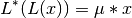
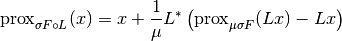

proximal_composition¶
-
odl.solvers.nonsmooth.proximal_operators.proximal_composition(proximal, operator, mu)[source]¶ Proximal operator factory of functional composed with unitary operator.
For a functional
Fand a linear unitaryOperatorLthis is the factory for the proximal operator ofF * L.Parameters: proximal : callable
A factory function that, when called with a step size returns the proximal operator of
Foperator :
OperatorThe operator to compose the functional with
mu :
operator.fieldelementScalar such that
(operator.adjoint * operator)(x) = mu * xReturns: prox_factory : function
Factory for the proximal operator to be initialized
Notes
Given a linear operator
 with the property that for a scalar
with the property that for a scalar


and a convex function
 , the following identity holds
, the following identity holds
This factory function implements this functionality.
There is no simple formula for more general operators.
The function cannot verify that the operator is unitary, the user needs to verify this.
For reference on the identity used, see [CP2011c].